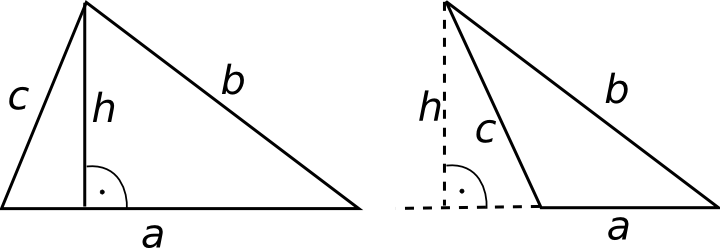
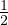

Kolmnurkade omadused

- Kolmnurga nurkade summa on alati 180∘.
- Kolmnurga pindala S =  ⋅ a ⋅ h, kus a on alus, h on kõrgus.
- Võrdkülgse kolmnurga kõik nurgad on 60∘.
- Võrdhaarse kolmnurga alusnurgad on võrdsed.
- Hüpotenuus on alati pikem kaatetitest.